Mystery Hunt Coin Gallery
The goal of each Mystery Hunt is to locate an object hidden somewhere on MIT campus. The first few hunts used an Indian Head Penny, and thus this object has become known as a “coin,” even though not all of them have been actual coins. This gallery contains all the coins from the past hunts that we've been able to track down; if you know of the coins we have marked as “unknown,” or have pictures of coins for which we only have sketches, please contact us.
Rahul Sridhar maintains a map of where all coins have been found.
2021
{kind=link}
Material: silver-plated brass, technique: die stamping, antiquing.
The 2021 Mystery Hunt kicked off with the revelation that MIT Professor Barbara Yew had created a portal to an alternate universe containing the Perpendicular Institute of the World (⊥IW) and had gotten stuck in it. Teams needed to rescue her and fix various problems with the buildings of ⊥IW caused by opening the portal. The coin was a transformed quarter that Professor Yew had left behind in a vending machine in ⊥IW.
2020
{kind=link}
Material: copper-plated zinc alloy, technique: die stamping, sandblasting.
The 2020 Mystery Hunt was about Penny Park, a fictional amusement park that had experienced a slow decline. Teams had to explore the park and figure out how to save each of its lands, collecting 16 pressed pennies along the way. The coin was a larger pressed penny that was generated by the heart of the park when it was fed all 16 pennies in the final runaround.
2019
{kind=link}
{kind=link}
Coin material: silver-plated zinc alloy, technique: casting, antiquing. Manhole material: silver-painted MDF, technique: CNC router.
The 2019 Mystery Hunt took place on the 100th anniversary of the Great Molasses Flood in Boston. In the opening skit, the writing team decided to create "Molasses Awareness Day", a new holiday commemorating the occasion. Once they did this, disaster struck! In a twist inspired by the movie The Nightmare before Christmas, it was revealed that each holiday exists as a town in the Holiday Forest, and that the molasses from Molasses Awareness Day town was quickly spreading and affecting all the other Holiday towns. Teams needed to find a round manhole cover to plug the hole in the molasses tank. The final coin was formed by punching a small hole in the tank, allowing a small—but safe—drip appropriate for remembering the holiday.
2018
{kind=link}
Material: unknown, technique: unknown. If you have more information about this coin, please contact us.
The 2018 Mystery Hunt was themed around the Pixar movie "Inside Out." Solvers were inside of the mind of Ms. Terry Hunter, working to recover the core memories of her four personality islands in order to help her team win their own, fake, mystery hunt. The coin was a new core memory orb that was generated in Terry's mind because her team won Mystery Hunt. The orb was colored yellow (Joy) for the winning team, but colored yellow and blue (Joy and Sadness) for all subsequent teams.
2017

Material: unknown, technique: unknown. If you have more information about this coin, please contact us.
The 2017 Mystery Hunt was based on Dungeons and Dragons, the role-playing game. Teams needed to level up their characters and complete quests in order to confront the evil sorcerer Mystereo Cantos (anagram of Setec Astronomy / Too Many Secrets) and recover the two-sided die (the coin!).
2016
{kind=link}
Material: unknown, technique: unknown. If you have more information about this coin, please contact us.
The 2016 Mystery Hunt was themed around the movie Inception. Teams were trapped in several layers of dreams and needed to wake a series of notable sleepers in order to escape. Once all 10 sleepers were awakened simultaneously, teams completed 10 mini-runarounds ending up in 4 different locations. Each location provided 1/4th of a small puzzle. After reconvening in Lobby 7 to put it together, teams learned that the ultimate dreamer was The Alchemist. The coin was found within the Alchemist sculpture by Setec Astronomy at 6:53 PM on Sunday.
2015
{kind=link}
{kind=link}
Material: unknown, technique: unknown. If you have more information about this coin, please contact us.
The 2015 Mystery Hunt was titled "20,000 Puzzles Under the Sea" and was themed around Jules Verne's novel, steampunk, and the exploration of the ocean. Teams needed to explore the depths of the ocean to locate a powerful "Nautilodestone" (the coin!) to harness the power of the "magnetomic-force." Eventually, teams made their way to Atlantis to find that it was completely deserted. After resolving this deeper mystery, teams were given a Navigational Chart which led them to the coin, a real lodestone located in 26-100.
2014
{kind=link}
Clock: premade object, coin material: pewter, coin technique: die stamping.
The 2014 hunt asked solvers to hunt down a fearsome beast that escaped from Wonderland to the MIT campus along with a cast of other Wonderland characters. At the end of their quest, the solvers had to close a hole between the two worlds, with the White Rabbit's pocket watch serving as the key. The giant pocket watch depicted above thus served as the coin for this hunt. As a reward for their efforts, the members of the winning team also received souvenir watch-like coins (depicted below the pocketwatch) with pictures of Alice and other Wonderland-related characters and artifacts on one side and a clock with the time set to "20:14" on the other side.
2013
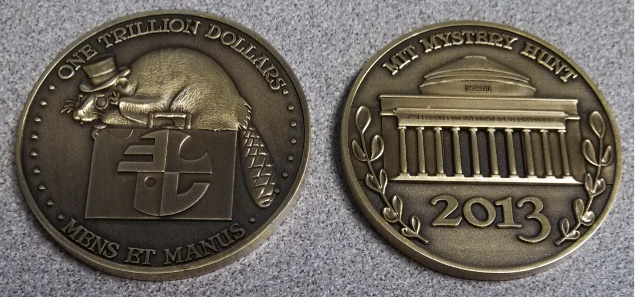
Material: brass; technique: die stamping.
The 2013 hunt involved teams pulling a heist to steal the coin from Enigma Valley Investment & Loan, to whom it had been mortgaged. Teams recruited the six experts who designed the bank's security systems and then had to physically circumvent these systems during the runaround. The coin was a one trillion dollar piece of currency.
2012
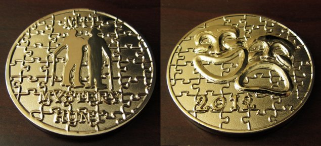
Material: nickel-plated brass; technique: die stamping.
The 2012 hunt was based on the film The Producers, with references to other Broadway shows, including Phantom of the Opera, Oklahoma, My Fair Lady, A Chorus Line, Man of La Mancha, Into the Woods, and Jesus Christ Super Star. The coin was a Tony Award, with an image of the Producers on one side.
2011
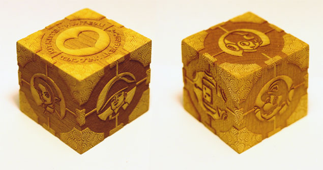
Material: Baltic birch wood; technique: laser engraving.
The 2011 hunt was based on video games, and included references to Mario, Zelda, Civilization, Mega-Man, Katamari Damacy, and Portal (from which the ultimate villain in the hunt was borrowed). The characters from the first five games appear on the coin, while the coin itself is represented in the form of the Companion Cube, an object (or, as some may argue, a person) prominent in Portal.
2010
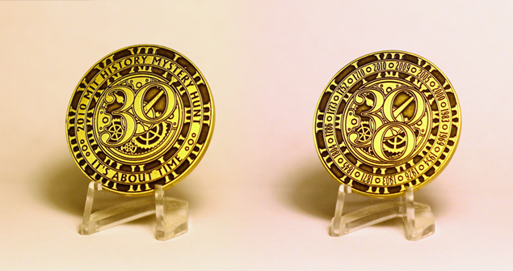
Material: bronze; technique: casting.
Designed by Mark Halpin
The 2010 hunt was based on the history of the hunt itself, and a sequence of events that transpired when the coin was hit by Professor Emit's Time Ray and began bouncing back in time, creating new rounds of puzzles and changing history. The two sides of the coin reflect the two parallel Hunt universes: the actual one where Hunt is 30 years old, and the alternate one, where Hunt is 300 years old. The years listed on the alternate universe side refer to the past "hunts" visited during that hunt.
2009
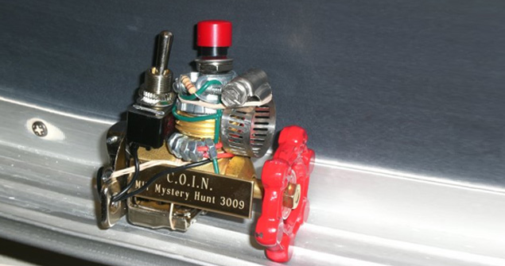
Material: miscellaneous hardware, wooden plaque; technique: construction, laser engraving.
The 2009 hunt was set in the future, where participants in a gaming convention based on the game "Escape from Zyzzlvaria" got sucked into the real Zyzzlvaria. In order to, well, escape from Zyzzlvaria, the participants needed to activate the Covertly Operational Inversion Node, or the COIN, depicted above.
2008
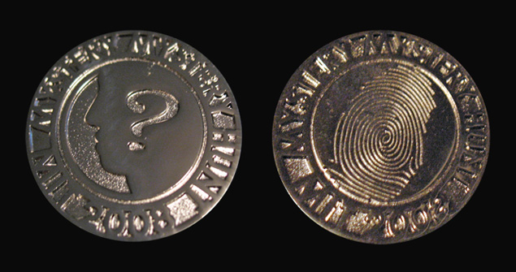
Material: metal; technique: casting.
Designed by Mark Halpin
The 2008 hunt was a whodunnit concerning the murder of Dr. Awkward. The coin design illustrates the concept of a classic murder mystery with a human silhouette and a fingerprint. The fingerprint served as evidence that was needed to convict the murderer.
2007
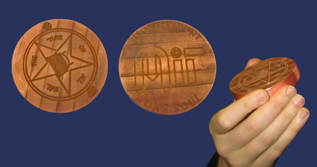
Material: copper; technique: lathe engraving.
The 2007 hunt involved a descent into Hell to regain the solvers' lost souls. The souls were regained in the form of the coin, pictured above.
2006
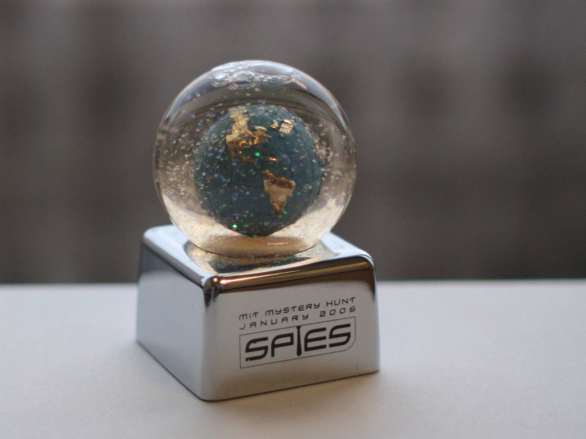
Material: metal, glass, plastic; technique: premade object with silk-screened lettering.
The 2006 hunt involved a mysterious intelligence agency known as S.P.I.E.S., which was trying to stop the evil Professor Moriarty from using the MIT Weather Machine to cover the world in eternal winter, save for one tropical island which he had purchased in advance. The snow globe was a key component of the MIT Weather Machine, which teams got to keep as a souvenir.
2005
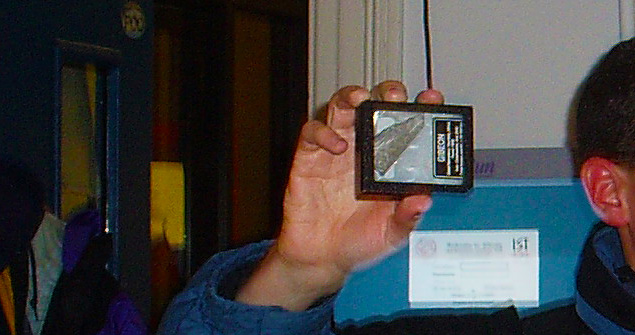
Material: mostly iron; technique: atmospheric friction
The 2005 hunt was themed around the town of Normalville, where a number of superpower-inducing meteorites made a landing. Progressing through the hunt involved collecting these superpowers, and the coin was an actual piece of a meteorite. Its current whereabouts are unknown.
2004

Country of origin: USA; denomination: 1 cent; year: 188?
The 2004 hunt was based on the film Time Bandits, which features a lump of coal that is actually a piece of "concentrated evil". Naturally, the coin this year was found inside a lump of coal; the coin itself was an Indian Head Penny, just like in the first Mystery Hunt.
2003
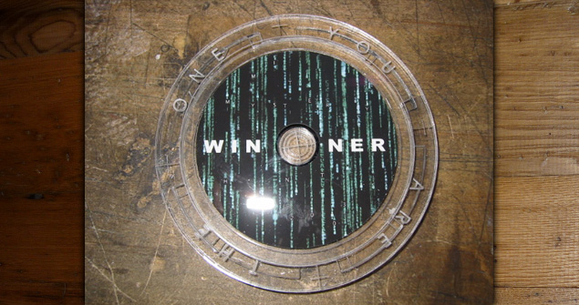
Material: premade CD, acrylic; technique: laser engraving, color printing
The 2003 hunt was a corporate murder mystery that turned out to be taking place inside the Matrix. So, naturally, the coin was a compact disc, with an appropriate green symbol rain design and the content of the entire hunt on it.
2002
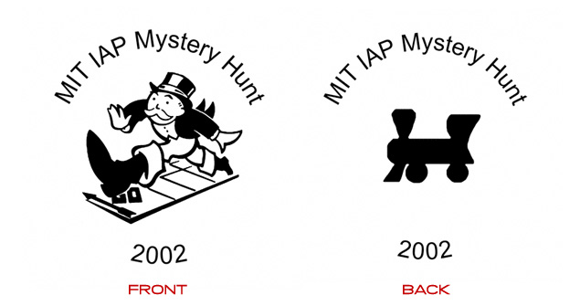
The 2002 hunt was based on the Monopoly board game and featured a design with familiar characters. If you have an image of the actual coin, please contact us.
2001
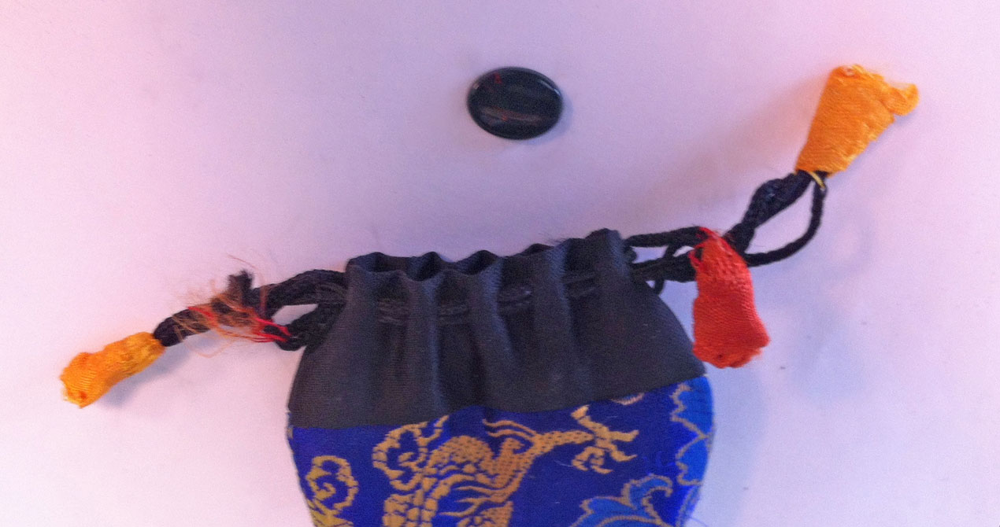
Material: bloodstone, technique: natural polished stone
The 2001 hunt, also known as the "hunt of horror", required the solvers to defeat Agatha Winchester, a powerful witch who was capable of cursing MIT with unspeakable evil. In order to beat her, the teams needed to recover her bloodstone, which acted as that year's coin.
2000
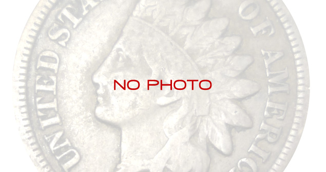
The coin from 2000 was a ruby slippers plaque (a red rectangular piece of plastic with a picture of ruby slippers on it.) If you have a photo of it, please let us know.
1999
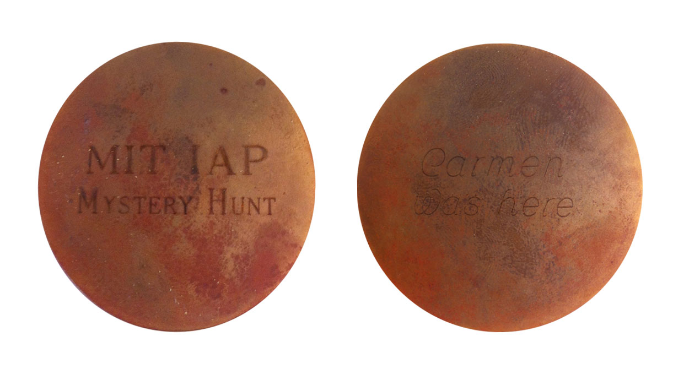
Material: brass, technique: engraving
The 1999 hunt was based on the popular game series that featured Carmen Sandiego, and its coin was a brass puck with the words "MIT IAP Mystery Hunt" on one side, and "Carmen was here" on the other.
1998

Material: paper, technique: printing, forgery
The 1998 hunt was about getting a degree in enigmatology, and the coin was an MIT diploma (with a seal, not shown above) in said field. This may be the first year when the "coin" was not an actual coin. If you have a picture of the diploma with the actual seal, please let us know.
1997
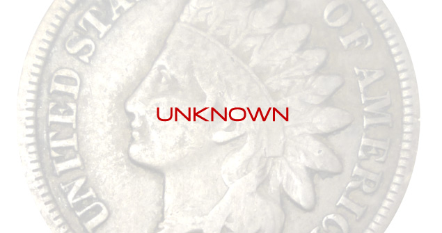
Andrew Russell writes:
I recall the coin was an early 1800's british coin perhaps a half crown or half penny featuring King George III. Since he was the King when America won its independence from Britain, He was technically the first King of America. The theme of the whole hunt that year was "search for the King".
If you have more information about it (especially photos!), please let us know.
1996
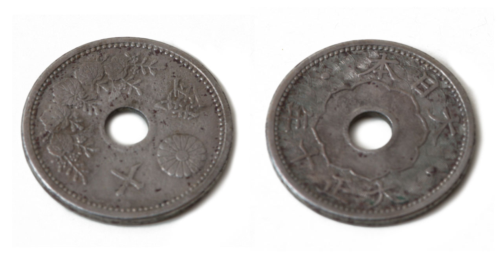
Country of origin: Japan; denomination: 10 sen; year: 10th year of Taisho (1921)
The 1996 hunt was based on the book "Godel, Escher, Bach", and its coin was a Japanese 10 sen (1/10 of a Japanese yen).
1995

Country of origin: Syria; denomination: 5 piastres; year: 1971
The 1995 hunt was based on the "Clue" board game, and its coin was a Syrian 5 piastres (5/100 of a Syrian pound).
1994
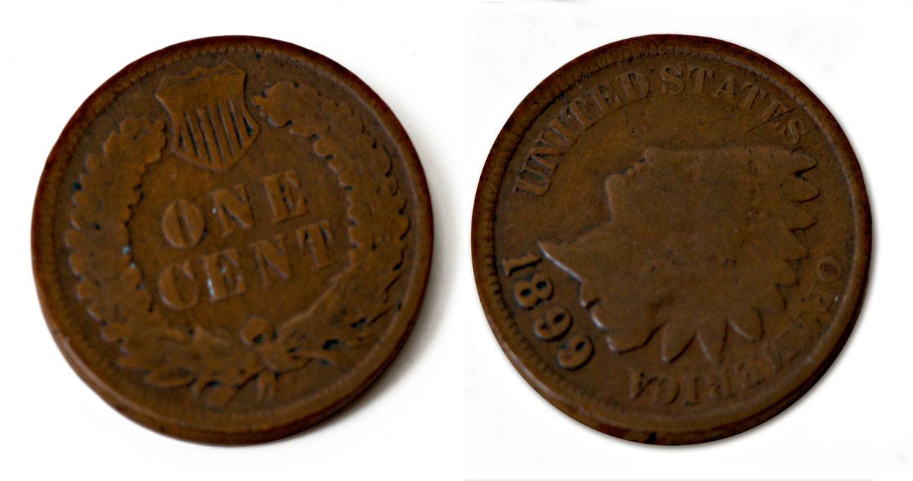
Country of origin: USA; denomination: 1 cent; year: 1899
The 1994 hunt was loosely based on a cyberpunk theme, and its coin was a traditional Indian Head penny.
1993
The coin from 1993 was a cup (representing the Holy Grail), with a coin inside of it. If you know what kind of coin it was, or have a picture of these objects, please let us know.
1991-1992
The coins from these years are not currently known. If you have more information about any of them (especially photos!), please let us know.
1990
Country of origin: Canada; denomination: 1 dollar; year: unknown
The 1990 coin is believed to be the Canadian 1 dollar coin (known as a Loonie), but no other information is currently available. If you have any more information or photos of the coin, please let us know.
1989
The coin from 1989 is not currently known. If you have more information about it (especially photos!), please let us know.
1988
Country of origin: Israel; denomination: ? shekels; year: unknown
The 1988 coin is believed to be one of the Israeli shekel coins, but no other information is currently available. If you have any more information or photos of the coin, please let us know.
1987
Scott Berkenblit writes that the 1987 coin was "a New York subway token", but no other information is currently available. If you have any more information or photos of the coin, please let us know.
1985-1986
The coins from these years are not currently known. If you have more information about any of them (especially photos!), please let us know.
1984
Country of origin: France; denomination: 10 centimes; year: unknown
The 1984 hunt coin was a French Republic 10 centimes piece, but no other information is currently available. If you have any more information or photos of the coin, please let us know.
1981-1983
Country of origin: USA; denomination: 1 cent; year: unknown
The hunts created by Brad Schaefer between 1981 and 1983 featured an Indian Head Penny as the coin. That is what gave the 'coin' its name. If you know the whereabouts of the original coin and can provide photos of it, let us know.